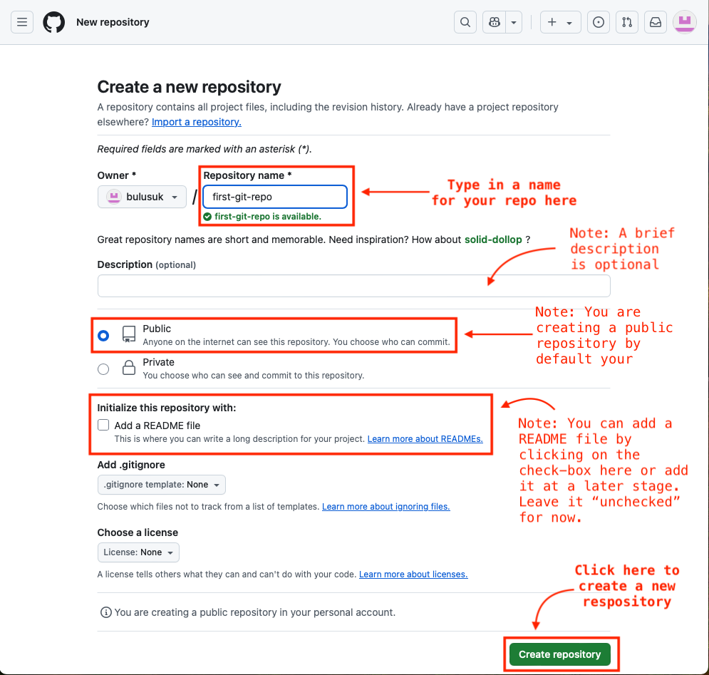
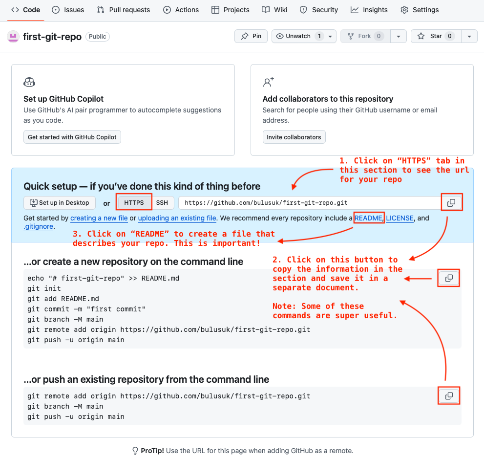
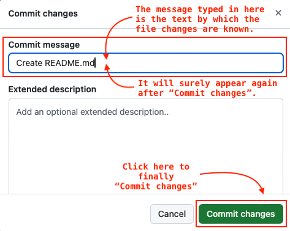

Create a git repository (also known as a git repo)
Referencing the content in this webpage:
Bulusu, Kartik V. (2026, January). MAE 6291: Internet-of-Things for Engineers and Scientists. [Course lecture notes, codes and presentations]. Department of Mechanical and Aerospace Engineering, The George Washington University.
Introduction
This guide will walk you through the process of creating a Git repository (or repo) after you successfully created a Github account.
Some basic jargon before we start: In Git or GitHub jargon,
- A repository or repo is a collection of files where your work is stored.
- A saved change is called a
commitin Git and GitHub. - Git is a command line software that handles your repos and its version control.
- GitHub is a web interface that helps with your repos and faciliates collarations with version control.
- GitHub uses Git to do everything with repos.
Prerequisites
Before you begin, ensure you have the following:
- An internet connection.
- Completed Git installation and version-check.
- Completed a Github account creation.
Steps to create a GitHub repo
2. Create a new repository
2.1 Enter a repository name.
2.2 Choose to write a brief description (optional).
2.3 Leave the check-box for “Add a README file” empty. Note: In this example we will create a README in the subsequent steps.
2.4 Click on Create repository.

3. Create a README file
3.1 First, save some important information for future needs
- Click on the
HTTPStab, copy the url of your repo and save it a separate document. - Copy the git-command lines and save them in a separate document.
3.2 Next, click on the README link to start creating a README file
- Note: README files are very important for github repos, especially in a collaboration between users.

4. Review the README.md file that was initiated in Step-3
README.mdfile can be edited using Markdown language. Themdfile extension loosely stands for “Markdown”.- Learn more about Markdown here and here
- Markdown is a very simple markup language to create a structure and format for documents. Older and similar languages are TeX and LaTeX.

5. Edit the README.md file that was initiated in Step-3
5.1 Edit the README.md as shown in the image below. - Note: The typed text there is in Markdown format.
5.2 Once done with editing, click on Commit changes... button. - Note: Github requires files to be committed once changes are made.

README.md file amd Commit changes...6. Type a Commit message and Commit changes
- In Git and GitHub, it is very uesful to type up a
Commit messagethat briefly describes the changes or the saved file. - Click on
Commit changesonce done and theCommit messagewill be associated with saved or committed file.

Commit messageand finally Commit changesConclusion
Congratulations! You’ve successfully created a new repository or repo on Git or GitHub. Your repo is now ready for you to use for collecting your committed files and collaborate with your peer group.

For more information and documentation on GitHub, visit https://docs.github.com/en.